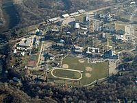
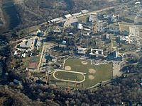

Globally, the Adventist Church operates 7,598 schools, colleges and universities, with a total enrollment of more than 1,545,000 and a total teaching staff of approximately 80,000.[92] It claims to operate "one of the largest church-supported educational systems in the world".[93] In the United States it operates the largest Protestant educational system, second overall only to that of the Roman Catholic Church.[94] The Adventist educational program strives to be comprehensive, encompassing "mental, physical, social and above all, spiritual health" with "intellectual growth and service to humanity" as its goal.